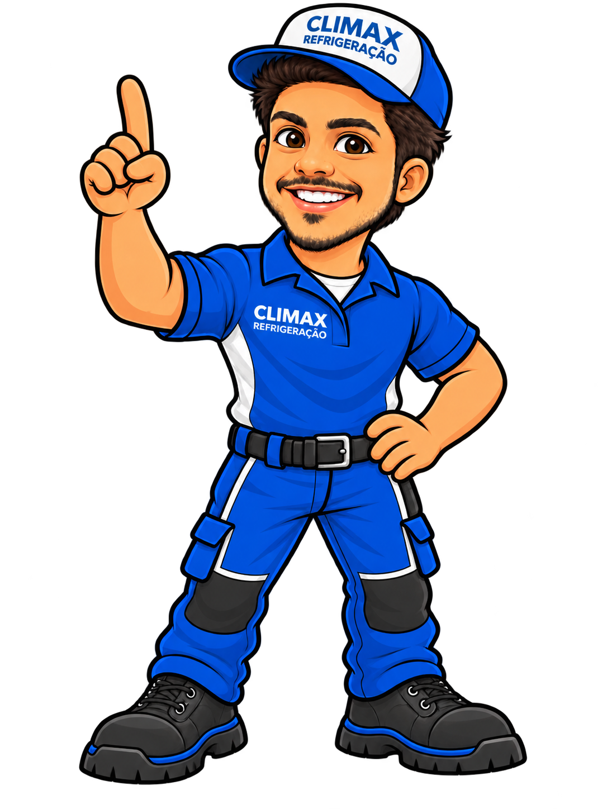
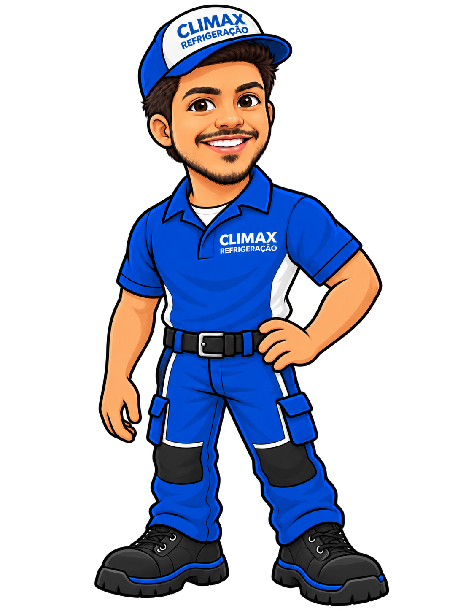
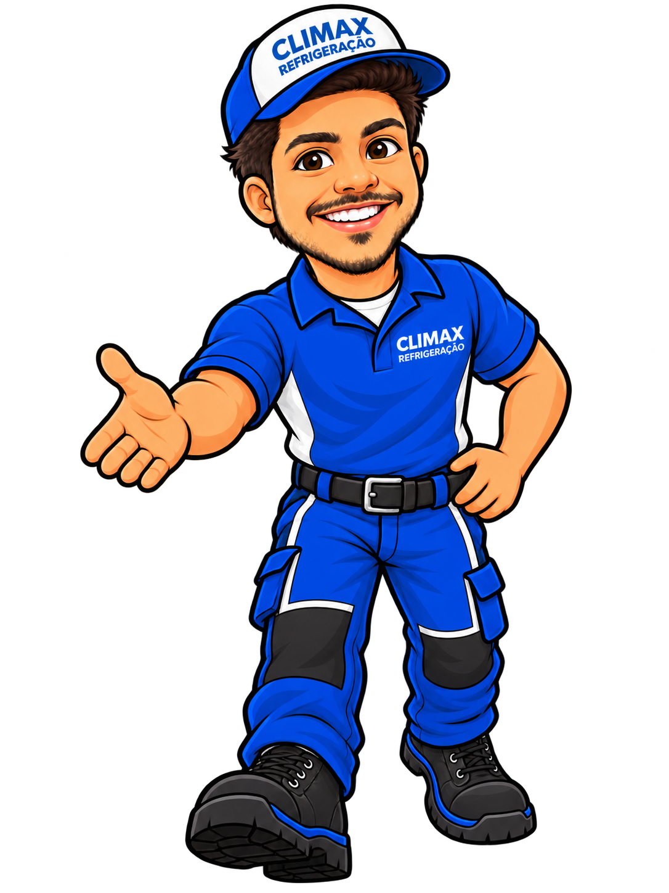
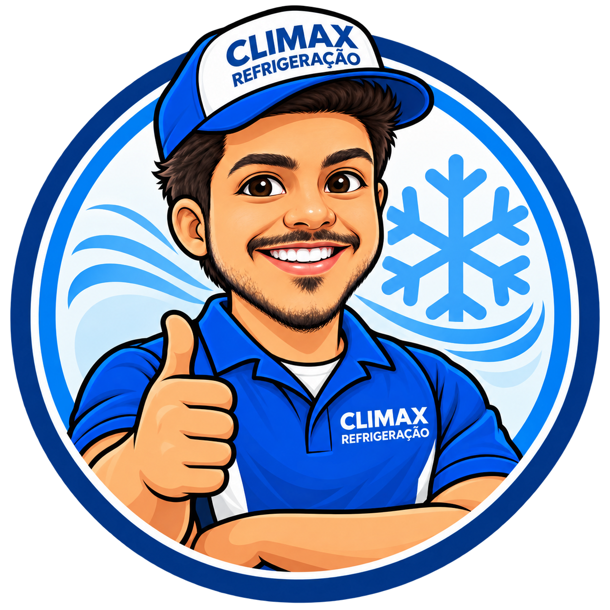
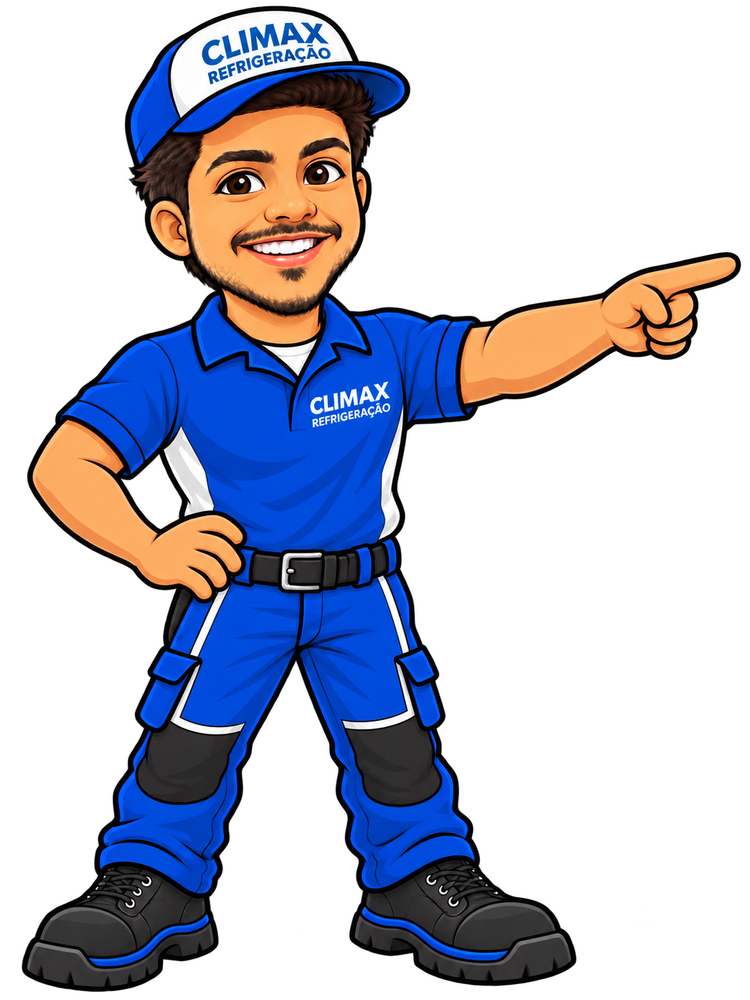
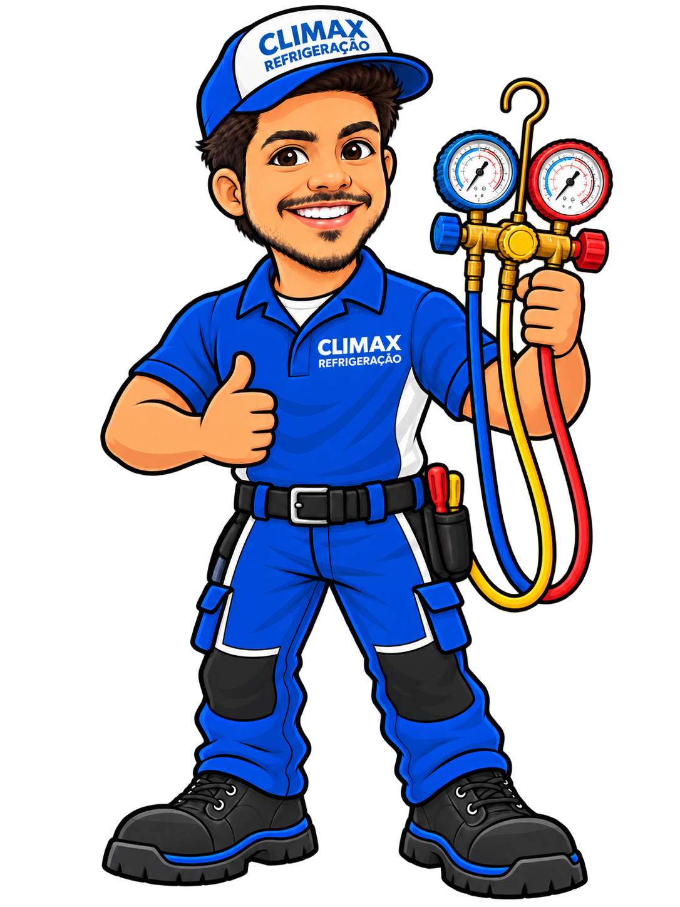
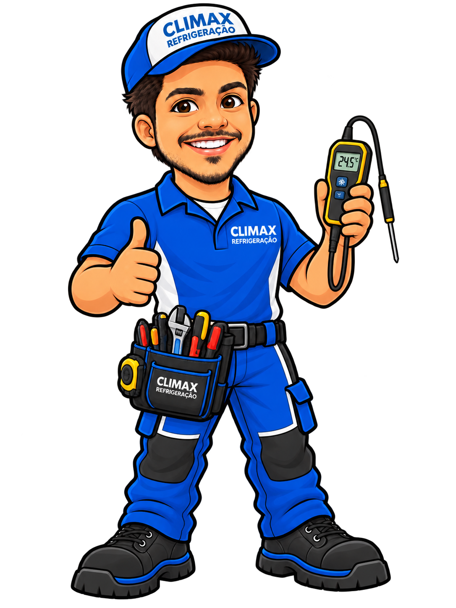
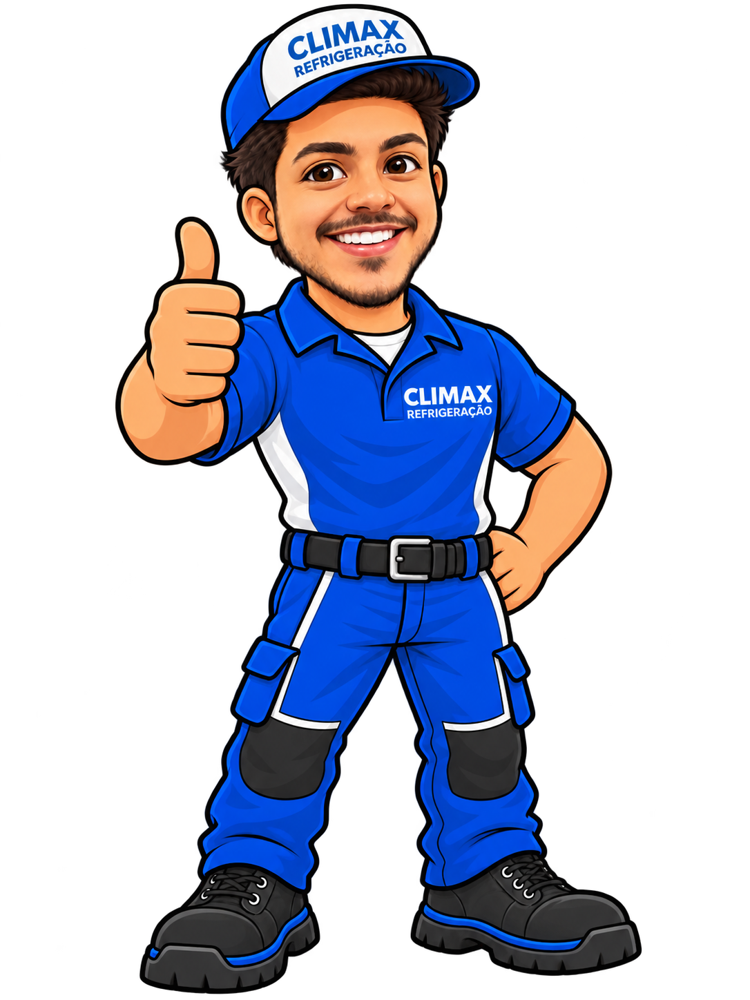
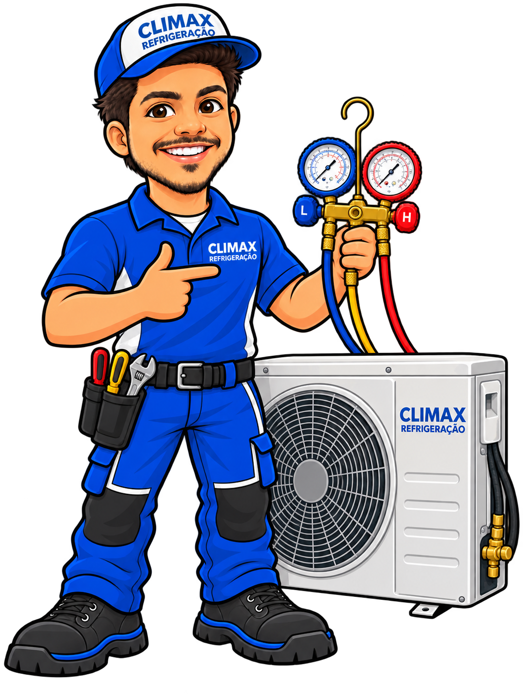
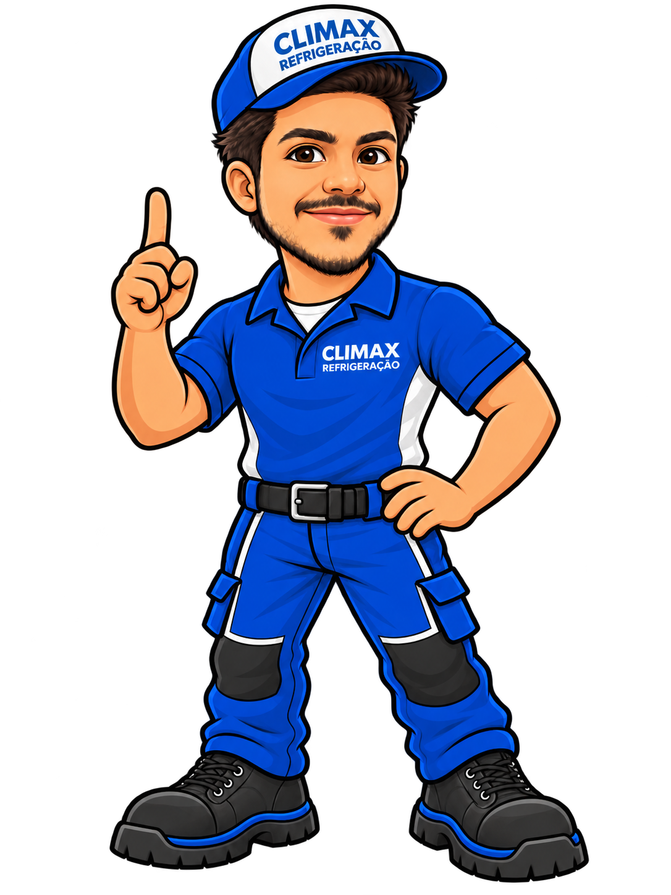

Promessa
Entregar climatização e refrigeração com clareza, cuidado e execução profissional.
O sistema mestre reúne estratégia, fundamentos, identidade verbal, identidade visual, mascote, aplicações e governança em uma única fonte de verdade.
assets/. Os fundamentos digitais formalizam nesta versão os padrões já usados na landing page CLIMAX.A CLIMAX deve ser percebida como uma empresa profissional, próxima e resolutiva, capaz de transformar complexidade técnica em uma experiência clara para o cliente.
Entregar climatização e refrigeração com clareza, cuidado e execução profissional.
Confiável, técnica, acessível, organizada e humana.
Comunicação premium sem perder proximidade, com ativos técnicos e mascote trabalhando juntos.
O sistema usa logo, azul institucional, tipografia digital e elementos de interface consistentes para manter continuidade entre site, social, atendimento e documentos.
Headlines, números e chamadas curtas.
Parágrafos, navegação, formulários e informação operacional.
Explicar antes de impressionar. Usar precisão quando o tema for técnico e linguagem humana quando o objetivo for atendimento ou conversão.
Frases objetivas, CTA explícito e pouca ornamentação verbal.
Conforto é humano; a marca pode ser cordial sem parecer informal demais.
Orientações técnicas devem priorizar precisão, contexto e segurança.
Use a versão do logo de acordo com o fundo final. Nunca distorça, incline, estique ou aplique efeitos que comprometam a leitura.

Fundos claros e superfícies brancas.

Fundos escuros, navy e fotografia com contraste.

Versão institucional fechada.
#0B5BA5#F1F2F2#042F4C#8DE8F7A coleção existente cobre CTA, apresentação, atendimento, avatar, manutenção, diagnóstico, pós-venda e comunicação técnica.










Site, landing pages, Instagram, WhatsApp, documentos, relatórios, proposta comercial, apresentação, assinatura e motion devem compartilhar os mesmos fundamentos.
Website, UI, landing pages e e-mail.
Feed, carrossel, story e avatar.
Proposta, relatório, datasheet e case.
Logo sting, intro, outro, loading e cutdowns.
Masters de marca devem ser versionados, revisados e rastreáveis. Mudanças de cor, forma, assinatura ou personagem precisam de contexto e revisão humana.
SVG como master vetorial. PNG é derivado para uso rápido.
Não substituir silenciosamente. Mudanças de master exigem commit descritivo.
Revisar contraste. O fundo final determina a variante do logo.
Usar tokens. Produtos e páginas digitais devem consumir os valores formalizados em CSS/JSON.